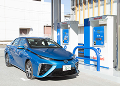
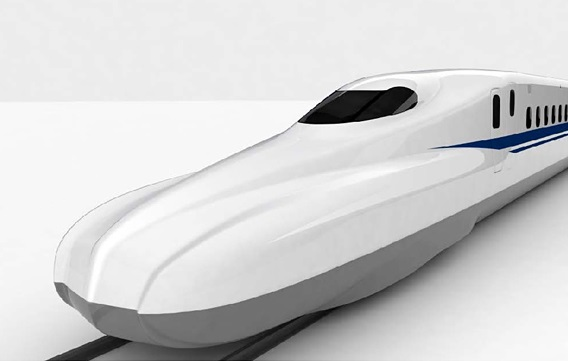

水素関連材料の研究
|  |
温室効果ガスによる地球温暖化への対策として、
日常生活や産業活動で水素を利用する社会、いわゆる「水素社会」の実現が期待されています。
しかし、水素関連技術には、技術面、コスト面、制度面などで多くの課題があります。
これらの課題の解決を目指して、水素に関連する機器の安全性、信頼性向上のための基礎研究を行っています。
(写真：燃料電池自動車と水素ステーション 岩谷産業株式会社提供) 詳細はこちら |
パワー半導体材料の研究
|  |
パワーエレクトロニクスは、半導体を用いて電力変換を行う技術です。
よく知られている機器として、直流を交流に変換するインバータがあります。
電気機器の高性能化や省エネルギー化のために、新しい半導体材料の利用が期待されています。
次世代パワー半導体材料の実用化を目指して、半導体結晶の高品質化に関する基礎研究を行っています。
(写真：次期新幹線 N700S JR東海提供) 詳細はこちら |